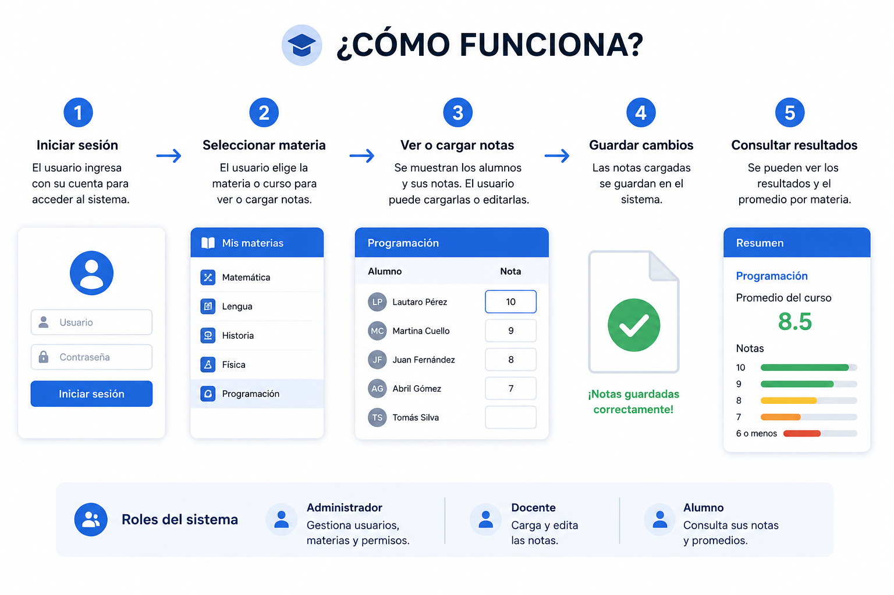

Sistema de Gestion de Notas ET35
Proyecto desarrollado para la Escuela Tecnica N. 35 "Ingeniero Eduardo Latzina" con el objetivo de digitalizar el proceso de gestion academica.
El sistema centraliza la informacion, automatiza el calculo de promedios, administra usuarios segun su rol y genera boletines en PDF listos para enviar a estudiantes y familias.
Tecnologias utilizadas
Node.js | Express | MariaDB | HTML | CSS | JavaScript | JWT | bcrypt
Ver Repositorio